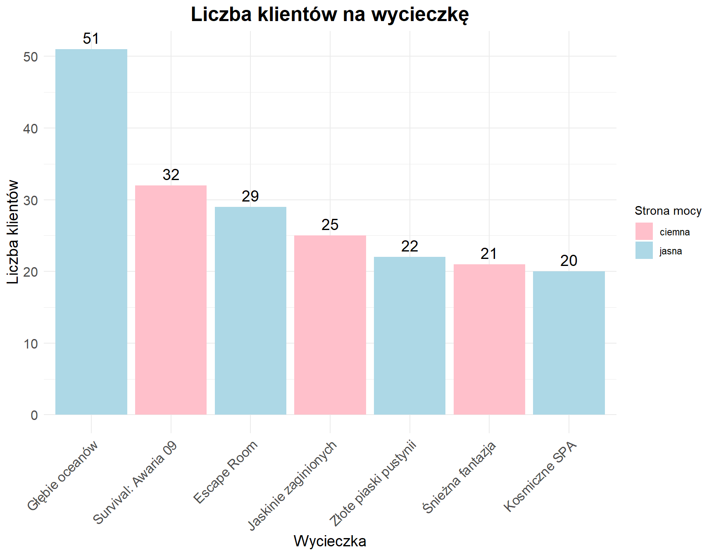

Raport
Analiza danych firmy „Space-U”
Niniejszy raport został wykonany na zlecenie firmy „Space-U”, organizującej konsumenckie załogowe loty kosmiczne, a w szczególności wycieczki z jasną i ciemną stroną mocy w świecie Star Wars. Celem raportu jest analiza danych zebranych przez firmę podczas 2 lat obecności na rynku, która pozwoli na wyciągnięcie wniosków na temat dotychczasowej działalności: związanych z nią kosztów oraz zysków, a także stosunku klientów do proponowanej oferty. Dzięki temu, możliwe będzie wskazanie kierunku rozwoju dla firmy w najbliższej przyszłości.
Podczas analizy posłużymy się następującymi pytaniami badawczymi:
- Które z proponowanych przez firmę rodzajów wycieczek cieszą się największą popularnością? Jak kształtuje się ich bilans zysków i strat? Czy są dla firmy opłacalne?
- Czy na podstawie wykresu liczby obsłużonych klientów w każdym miesiącu działalności firmy możemy wyciągnąć wnioski, że firma się rozwija lub podupada?
- Po których z proponowanych wycieczek klienci są skłonni wybrać się na kolejne, a po których nie wracają do firmy? Czy można na tej podstawie wycofać niektóre wycieczki z oferty?
- Który z typów wycieczek cieszy się większą popularnością – wycieczki z jasną czy ciemną stroną mocy?
- Jak często podczas wyjazdów zdarzają się wypadki konkretnych typów i jaka część klientów jest ubezpieczona na wypadek ich wystąpienia?
- Czy wycieczki, którym klienci wystawiają najwyższe oceny, są również najchętniej wybierane?
- Którzy spośród naszych pracowników (pilot i przewodnik) najczęściej latali wspólnie na wycieczki?
Analiza
Które z proponowanych przez firmę rodzajów wycieczek cieszą się największą popularnością? Jak kształtuje się ich bilans zysków i strat? Czy są dla firmy opłacalne?
Jednym z kluczowych elementów działalności firmy turystycznej jest dostosowywanie oferty do potrzeb i preferencji klientów. Dlatego analiza popularności poszczególnych rodzajów wycieczek jest niezwykle istotna z punktu widzenia planowania przyszłych działań marketingowych oraz rozwoju oferty. Pozwala to nie tylko na optymalizację zasobów, ale również na zwiększenie satysfakcji klientów poprzez oferowanie wyjazdów, które cieszą się największym zainteresowaniem.
Na podstawie danych zgromadzonych w bazie danych, możliwe było określenie, które wycieczki cieszyły się największą popularnością wśród klientów. Spójrzmy teraz na liczbę zorganizowanych lotów na poszczególne planety.
Łącznie zorganizowana liczba wylotów wynosi 28. Najpopularniejsza wycieczka pod względem liczby wylotów to: Głębie oceanów, z liczbą wylotów 6, natomiast zyskująca dopiero popularność okazała się: Jaskinie zaginionych, z liczbą wylotów 3.
Teraz możemy zobaczyć, jak wygląda to w przypadku ilości obsłużonych podróżnych.

Łącznie firma obsłużyła 200 klientów. Najpopularniejsza wycieczka pod względem liczby klientów to: Głębie oceanów, z liczbą klientów 51, natomiast zyskująca dopiero popularność okazała się: Kosmiczne SPA, gdzie zdecydowało się na nią tyle osób: 20.
Bilans zysków i strat poszczególnych rodzajów wycieczek
Analiza bilansu zysków i strat dla różnych typów wycieczek oferowanych przez firmę stanowi kluczowy element oceny rentowności działalności. Pozwala ona nie tylko ocenić, które rodzaje wycieczek generują największe przychody, ale również które wiążą się z najwyższymi kosztami operacyjnymi, co ma bezpośredni wpływ na ostateczny zysk netto.
W ramach analizy zestawiono przychody uzyskane z tytułu sprzedaży konkretnych rodzajów wycieczek z odpowiadającymi im kosztami – takimi jak zakwaterowanie, wyżywienie, opłaty przewodników, transport, naprawy pojazdów czy wydatki logistyczne. Dzięki temu możliwe było określenie, które typy wyjazdów są najbardziej opłacalne, a które przynoszą mniejsze zyski lub wręcz straty.
W tym celu posłużmy się najpierw średnią ceną wycieczki.

W celu uzyskania pełniejszego obrazu rentowności działalności firmy, przeprowadzono także analizę łącznych zysków generowanych przez wycieczki do poszczególnych planet, z uwzględnieniem liczby uczestników. W odróżnieniu od wcześniejszego zestawienia, które bazowało na średnich wartościach dla jednej wycieczki (jeden wylot), niniejsze podsumowanie uwzględnia realną skalę sprzedaży – czyli ilość podróżnych, którzy skorzystali z każdej z ofert. Takie podejście pozwala precyzyjnie określić, które kierunki nie tylko są popularne, ale również najbardziej dochodowe w ujęciu globalnym.

Ostateczny bilans finansowy
W końcowym etapie analizy działalności firmy turystycznej dokonano całościowego podsumowania bilansu finansowego, obejmującego wszystkie kluczowe kategorie wpływające na rentowność przedsiębiorstwa. Zestawiono trzy główne elementy: koszty, przychody oraz zysk.
W skład całkowitych kosztów weszły:
Koszty organizacji wyjazdów,
Koszty utrzymania klientów podczas wycieczki,
Koszty utrzymania pracowników.
Przychody uwzględniają wszystkie wpływy uzyskane od klientów za zakupione wycieczki, bez względu na ich rodzaj czy kierunek. Dzięki temu możliwe było określenie ogólnej wartości sprzedaży usług turystycznych w analizowanym okresie.
Zysk został obliczony jako różnica między całkowitymi przychodami a sumą wszystkich kosztów – zarówno bezpośrednich (organizacja wyjazdów), jak i pośrednich (utrzymanie pracowników).

Ostatecznie uzyskano:
- Koszt organizacji lotów wyniósł 235 924. Obejmuje on głównie wydatki związane z transportem oraz logistyką podróży.
- Koszt utrzymania klientów podczas wycieczek wyniósł 3 131 250. W skład tej kategorii wchodzą m.in. zakwaterowanie, wyżywienie, usługi przewodników i atrakcje w ramach programu wycieczki.
- Wypłaty dla pracowników stanowiły 1 403 725.
Łącznie koszty operacyjne firmy osiągnęły poziom 4 770 899.
Z kolei przychód uzyskany ze sprzedaży wycieczek wyniósł 8 430 000.
Na tej podstawie obliczono zysk firmy, który wyniósł 3 659 101.
Czy na podstawie wykresu liczby obsłużonych klientów w każdym miesiącu działalności firmy możemy wyciągnąć wnioski, że firma się rozwija lub podupada?
Celem przeprowadzonej analizy jest sprawdzenie, czy na podstawie wykresu liczby obsłużonych klientów w poszczególnych miesiącach można ocenić, czy firma się rozwija, czy podupada. W tym celu dane zostały przedstawione na wykresach, które umożliwiają identyfikowanie trendów oraz zmian w liczbie klientów na przestrzeni czasu.

Porównując dane na tle lat możemy stwierdzić, że z roku na rok w naszej firmie przybywa coraz więcej klientów. W roku 2099 było 151 klientów. To o 102 klientów więcejniż w roku 2098 .

W roku 2099 najwięcej klientów skorzystało z usługi w 6 miesiącu. Dla porównania w roku 2098 najbardziej zyskownym miesiącem był lipiec . Sugeruje to, że z roku na rok do firmy przybywa coraz więcej klientów.
Po których z proponowanych wycieczek klienci są skłonni wybrać się na kolejne, a po których nie wracają do firmy? Czy można na tej podstawie wycofać niektóre wycieczki z oferty?
Kolejne zagadnienie dotyczy badania chęci wybierania się klientów na kolejne wycieczki z firmą. W tym celu klienci zostali podzieleni na 2 grupy: tych, którzy w ciągu 2 lat działalności „Space-U” wybrali się tylko na jeden wyjazd, oraz tych, którzy odwiedzili kilka miejsc. Dla każdej z grup zliczono wycieczki, które wybrano podczas pierwszych wylotów – pierwsze wrażenia zdecydowały o tym, czy klienci ponownie obdarzyli firmę zaufaniem, czy też nie.

Klienci, którzy zdecydowali się wziąć udział w więcej niż jednym wyjeździe, najczęściej wykupowali za pierwszym razem następujące wycieczki: Escape Room, Jaskinie zaginionych, Survival: Awaria 09. Najpopularniejszą wycieczką wśród nich była wycieczka o nazwie Escape Room, na którą wybrało się 8 klientów. Może to oznaczać, że zwiedzającym spodobał się klimat wycieczki, a w planie firmy na najbliższy czas należy uwzględnić organizację większej liczby wycieczek tego typu bądź wprowadzić do oferty więcej rodzajów wyjazdów w podobnym klimacie.

Klienci, którzy nie zdecydowali się ponownie wziąć udziału w wyjeździe organizowanym przez „Space-U”, najczęściej wykupowali za pierwszym razem następujące wycieczki: Głębie oceanów, Survival: Awaria 09, Jaskinie zaginionych. Najczęściej wybieraną wśród nich wycieczką była wycieczka o nazwie Głębie oceanów, na którą wybrało się 49 klientów. Może to oznaczać, że zaproponowana wycieczka nie spotyka się z pozytywnym odbiorem wszystkich klientów, zatem należy wprowadzić zmiany w jej plan. W przypadku dalszego braku zainteresowania kolejnymi wyjazdami z firmą wśród klientów, którzy wybrali się na wycieczkę tego typu, należy zastanowić się nad wycofaniem wycieczki z oferty i zastąpieniem jej inną propozycją.
Który z typów wycieczek cieszy się większą popularnością – wycieczki z jasną czy ciemną stroną mocy?
Firmę „Space-U” interesuje również, która ze stron mocy cieszy się większą popularnością wśród turystów - czy więcej osób wybiera się na wycieczki z jasną, czy z ciemną stroną mocy? Odpowiedź na to pytanie pomoże firmie lepiej dopasować ofertę wycieczek do oczekiwań klientów w najbliższej przyszłości. Aby uzyskać odpowiedź, liczymy, ile było rezerwacji wycieczek każdego z dwóch typów.

Z powyższego wykresu odczytać można, że to jasna strona mocy cieszy się większą popularnością wśród klientów firmy - na wycieczki tego typu wybrało się 122 klientów. Dla porównania, wycieczki oznaczone jako “ciemna strona mocy” wybrało 78 klientów. Wobec dużego zainteresowania klientów wyjazdami oznaczonymi jako “jasna strona mocy”, można wprowadzić do oferty firmy więcej wycieczek tego typu.
Jak często podczas wyjazdów zdarzają się wypadki konkretnych typów i jaka część klientów jest ubezpieczona na wypadek ich wystąpienia?
Celem przeprowadzonej analizy jest sprawdzenie, jak często podczas podróży dochodzi do wypadków poszczególnych typów oraz jak duża część klientów jest ubezpieczona od skutków takiej sytuacji. W tym celu dane zostały przedstawione na wykresie, umożliwiającym identyfikowanie najczęściej występujących wypadków oraz ocenę stopnia ubezpieczenia klientów w obliczu takiego ryzyka.

Powyższy wykres przedstawia liczbę wypadków podczas podróży w zależności od rodzaju wypadku. Jak możemy zauważyć najczęściej pojawiającym się wypadkiem jest Wypadek medyczny. Sugeruje nam to, że na ten rodzaj wypadku powinniśmy jako firma zalecać ubezpieczenie się naszym klientom.

Dla najczęściej pojawiającego się rodzaju wypadku, jakim jest Wypadek medyczny, 64.2857143% klientów posiada ubezpieczenie pokrywające koszty związane z tym wypadkiem. Dla wypadku: “Pomoc w przypadku utraty dokumentów” stosunek klientów ubezpieczonych do wszystkich klientów, którzy tego wypadku doświadczyli, jest największy i wynosi 100%. Liczba tych wypadków wynosi 2. Z kolei klienci najrzadziej posiadają ubezpieczenie na Klonowanie w razie śmierci w stosunku do liczby wypadków tego typu.
Czy wycieczki, którym klienci wystawiają najwyższe oceny, są również najchętniej wybierane?
Oceny wystawiane przez klientów po zakończonych wycieczkach stanowią istotny element oceny jakości oferty turystycznej. Są one nie tylko subiektywnym wyrazem zadowolenia uczestników, ale również cennym źródłem informacji dla firmy, pozwalającym na identyfikację mocnych i słabych stron. Dzięki gromadzeniu ocen firma może monitorować poziom satysfakcji uczestników, identyfikować najbardziej doceniane elementy oferty (np. konkretne kierunki, przewodników, atrakcje) oraz podejmować trafne decyzje dotyczące udoskonalania wyjazdów. Wysokie oceny stanowią również wartość marketingową – mogą budować zaufanie nowych klientów i pozytywnie wpływać na wizerunek firmy. Klienci firmy Space-U mają możliwość oceny wycieczki w pięciostopiowej skali (1-5). Przyjrzyjmy się jak jakie mają odczucia.

Najlepiej ocenianą wycieczką jest Escape Room, z oceną 4.15. Najmniej do gustu przypadła za to wycieczka Survival: Awaria 09, gdzie ocena wyniosła 3.25.
Dla porównania spójrzmy na wykres popularności, który już wcześniej widzieliśmy.

Którzy spośród naszych pracowników (pilot i przewodnik) najczęściej latali wspólnie na wycieczki?
Ostatnie pytanie dotyczy załogi statków - którzy spośród pracowników firmy najczęściej wybierają się wspólnie na wycieczki. Aby na nie odpowiedzieć, korzystamy z tabeli, w której opisano wszystkie zorganizowane wyjazdy - wybieramy wszystkie możliwe połączenia pilotów i przewodników oraz liczymy, jak często wyruszają ze sobą w podróże.

Z wykresu powyżej możemy odczytać, że Han Solo, Sheev Palpatine są członkami załogi, którzy wylatują ze sobą na wycieczki najczęściej. Może to oznaczać, że zgłaszają się do wyjazdów wspólnie, ponieważ dobrze im się współpracuje. Firma powinna wziąć to pod uwagę podczas planowania kolejnych lotów - jeżeli relacje pomiędzy pracownikami są dobre, znajduje to przełożenie na atmosferę całej wycieczki, a dzięki temu - również na pozytywną opinię klientów.